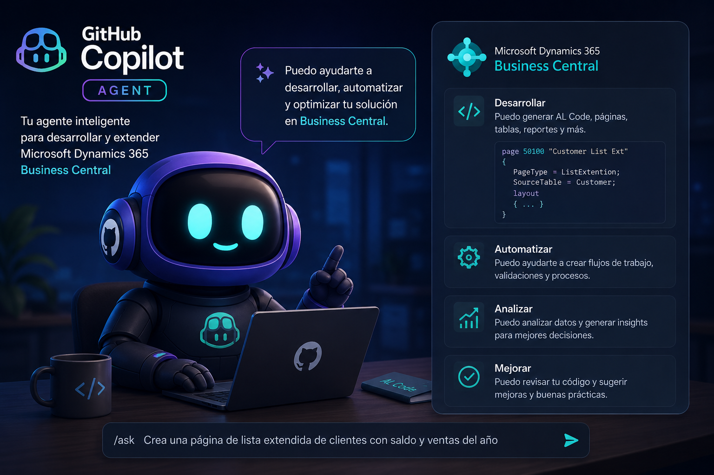
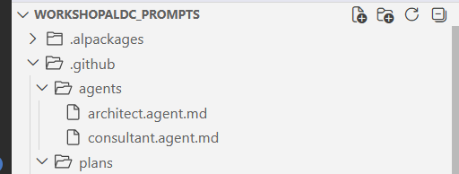
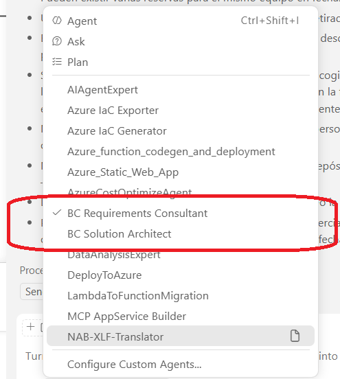
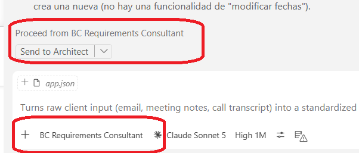

Agentic Development in Business Central: Turning Prompts into Persistent Agents
Instructions, skills and prompts each solve one piece of the automation puzzle — but every one of them still needs you to press the trigger. You pick the prompt, you decide which skill applies, you remember which rules are active for this task. Fourth entry in the series: what happens when all three pieces are wrapped into a role with its own memory, one that decides for itself what it needs at each step? That's an agent, and it's the subject of this article.
This entry continues the series on agentic development in Business Central, moving from single-shot prompts to a persistent role that knows what belongs to it, refuses what doesn't, and knows when to pass the work along.

Prompt vs. agent: a different kind of building block
A prompt is a one-shot instruction: you invoke it, it runs, it's done. It does exactly what the text says, exactly once, and nothing outlives that single call.
An agent is different in kind, not just in degree. It's a persistent role with an identity: a requirements consultant, a solution architect, a developer. Each role gets exactly the tools its job requires — nothing more — and moves through its own sequence of states as the work progresses.
Two behaviors set an agent apart from a plain prompt:
- It declines work that isn't its job. A requirements consultant that gets asked "which table should I create for this" pushes back — that's not a functional question, it belongs to the architect.
- It knows when its part is finished and who should pick up from there, instead of trying to carry the task through to the end on its own.
Put simply: a prompt answers a question. An agent holds a conversation under a fixed set of rules, says no to what it shouldn't do, and hands the baton to the next agent at the right moment.
The anatomy of an agent
An agent is defined by a small set of properties that decide who it is, what it can touch, and where its output goes next.
Name and description. The name gives the role an identity — Business Central Requirements Consultant, in our case — and the description states its purpose in a line: gathering and validating functional requirements before anything technical gets decided.
Tools. This is where the boundaries get real. An agent only gets access to what its role actually needs: reading files, editing files, searching, calling a specific MCP server. You can go further and restrict it to creating new files only, never touching what already exists — a small constraint that makes the agent's behavior far more predictable, because "I might overwrite something" simply isn't an option it has.
Model. Each agent can run on a different model depending on how demanding its task actually is. A consultant drafting functional prose doesn't need the same reasoning horsepower as an architect working out a technical design from scratch. Splitting models by role isn't just about quality — it's a direct token-cost decision: you don't pay for the expensive model on tasks that don't need it.
Handoff. This is the property that didn't exist in plain instructions or standalone prompts: who receives the work once this agent is done. The requirements consultant, once its functional specification is complete, hands off automatically to the solution architect, with an instruction telling it exactly what to do next: turn this functional spec into a technical one.

Inside the requirements-consultant agent
Beyond the core properties, this agent's definition spells out its behavior in detail:
- Role: act as a functional consultant only, never technical. No object names, no table names, no data structures — that's the architect's territory.
- Guiding principle: never invent. If something is unclear, ask. The agent's job is to surface every functional gap before a single technical decision gets made.
- Workflow: read what the client sent, ask for anything missing, identify the functional gaps that still need clarifying, and only then generate the specification document.
- Document format: a short, human-readable name, an initial "draft" status — because the client still needs to confirm it — a summary of what was understood, a list of open questions, and an explicit out-of-scope section.
- Human checkpoint: the workflow pauses at a defined step and waits for a human decision before treating the specification as final — the same human-in-the-loop pattern from the prompts entry in this series, now built into the agent's own behavior rather than left to whoever invokes it.
- Explicit limits: the agent must not propose technical solutions, must not paper over ambiguity, and must not decide which tables will be used. Its only job is to produce a complete and correct functional definition.
Agents live in a .github/agents folder, right alongside the .github/skills and .github/prompts folders from earlier entries in this series. Two agents live there so far — consultant and architect — though this article only puts the first one to work.
Where agents live and how you call them
Once an agent is defined, it shows up directly in Copilot's mode selector, next to the usual agent, ask, and plan options — no need to invoke a specific prompt or remember which skill applies. Selecting a custom agent changes the whole conversation from that point on: everything you type from then on is filtered through that agent's rules, tools, and workflow, instead of running against a generic assistant.
A practical case: equipment reservations for RentalFlow
RentalFlow, the equipment-rental case study used throughout this series, already has a card for every piece of equipment, tracking its status — rented, available, in maintenance. The client emails a new request: on top of renting equipment outright, they now want to be able to reserve it ahead of time, with the option to cancel a reservation later.
That email, pasted as-is, is the only input the requirements-consultant agent gets. There's no prompt to pick, no skill to load manually — the agent's own role definition already tells it what to do with a raw client request.

The result is a draft specification that summarizes what was understood and, more importantly, raises exactly the kind of functional questions a senior consultant would ask before agreeing to anything: can a currently rented item still be reserved for a future date? Does a cancellation need a recorded reason? Is there a maximum lead time for a reservation? These aren't implementation questions — they're the ones a consultant would raise in a requirements meeting, now made explicit and documented before a single line of code exists.
Once those questions are answered, the agent regenerates the specification — no open questions left — and saves it in a "ready for architecture" state. In practice, that document is the functional contract you'd hand the client to sign off on: no tables, no objects, nothing technical, just the agreed scope.
The handoff in action: from consultant to architect
This is where the handoff property earns its place. The consultant agent's definition names its recipient explicitly — the solution architect — and pairs that with a concrete instruction that fires automatically: generate the technical specification from the functional specification that was just produced.
It's worth noting this pattern isn't only useful for developers. It works just as well for the consulting side of the job — catching questions you might not have thought to ask, and leaving a clear paper trail of every functional decision before the technical work even starts.

Watch the full walkthrough — the video below (in Spanish) shows this exact agent running live, from the client's email to the handoff to the architect.
Video walkthrough
With the functional specification handed off, the natural next step is to see how it turns into a technical specification, and how that technical specification then drives the actual AL development. That's what the next entry in this series will cover.